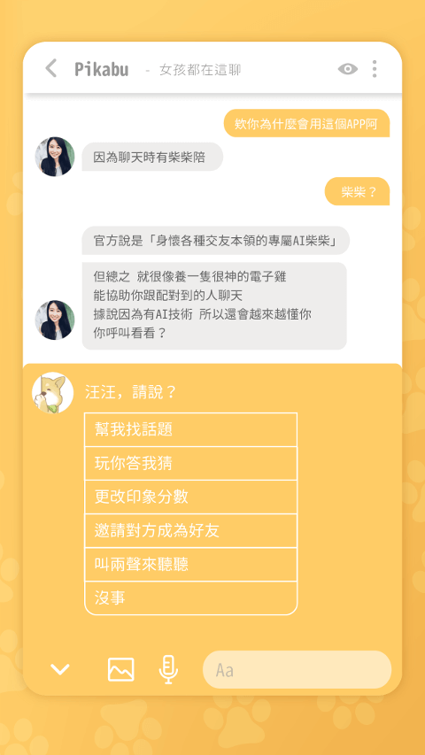

用了大半年 Pikabu：七分门槛帮我挡掉了一堆无效配对
Pikabu 装了九个月，从当初觉得"又一个新瓶装旧酒的社交软件"到现在把标签系统当成判断同好的第一信号。这篇长期使用报告聊七分门槛的真实感受、7天自动关闭的烦人之处，以及我对它的判断有了哪些变化。
Pikabu 装到现在快九个月了。当初装它是因为朋友说这玩意儿和市面上那些滑卡软件不一样，它的官网上把评分制的规则写得很清楚——不是左滑右滑，是给别人打分，别人也给你打分，双方加起来过七分才配得上。我当时心想，又一个新瓶装旧酒的社交产品，试试看吧。
当初随便填的标签，现在成了最有用的判断信号
刚注册那会儿，标签选得很随意——兴趣类挑了几个高频的：猫咪、看电影、跑步；个性类填了"慢热"和"有点社恐"；外表类选了"不胖不瘦"这种模板化的描述。总共填了二十来个吧，心想这就是个装饰，谁会认真看标签啊。当初从官方下载拿到安装包的时候也没留意页面上其实有标签选填的引导，要是能提前看看可能选得更准。
后来才发现，共同标签真的是对方给分的直接参考。Pikabu 会把你和对方的共同标签特别高亮出来，那些"频率对得上"的信号一目了然。我试过给只有一两个共同标签的人打3分，给有五六个共同标签的人打4分甚至5分——这不是刻意为之，是真的觉得"聊得来的概率更大"。反过来也一样，当别人浏览我的档案时，如果只有零星几个共同标签，对方大概率不会给高分。
现在我反而把标签系统当成了一个筛选器：填标签越认真，吸引到的人越精准。当初觉得"装"的个性标签（比如"慢热但真诚"），其实是在提前传递我的社交风格——帮对方判断要不要主动搭话，也帮我过滤掉那些上来就尬聊的人。
七分门槛：从"会不会太严"到"帮我省了一堆时间"
刚用的时候，七分门槛确实让我有点焦虑。满分5分，双方加起来要≥7——最常见的能过的组合是4+4、4+3、3+4，5分和1分都少见。我当初心想，那我要是只配到3分的人怎么办？会不会配不上任何人？
结果用了大半年，我的感受是：配不上的那些人，我本来也不想聊。
这个设计比我一开始想的聪明多了。门槛卡得太松（比如3+3就能过），配对会很多，但大部分是无效的——你没兴趣对方也没兴趣，尬聊几句就消失。门槛卡得太严（比如4+4），又会配不到任何人。七分卡在一个平衡点：双方都觉得"还不错"的情况才能通过，至少一方觉得"不太想聊"的情况会被过滤。
我试过给自己刷分——给所有人打4分，以为这样能提高配成率。结果发现没用，系统好像能检测到刷分行为。后来老老实实给真正有兴趣的人打4分，反而配成率没怎么变，但配对质量明显高了。这个机制的核心不是让你多配对，是让你配对有价值的人。

7天自动关闭：我至今没完全适应的规则
如果说七分门槛帮我省了时间，那7天自动关闭就是在给我制造焦虑。
Pikabu 的聊天室默认7天内没新消息就自动关闭，聊过的记录全部消失，双方从彼此的配对池里也消失了。柴犬教练会在第5天和第6天弹出提醒，说"再过2天就要自动关闭了"，但提醒归提醒——消失了就是消失了，找不回来。
我是慢热型，有时候聊到一半对方忙了没消息，我也忙忘了，过两天想起来聊天室已经没了。有个配对我聊了两周，对方去出差了，回来之后聊天室已经关闭——就这么断了联系，挺可惜的。
后来才知道有个"成为朋友"的按钮，点了之后7天限制就永久失效。但我至今没开过这个功能——每次想点的时候，又觉得"再聊聊看吧，说不定对方也在忙"，结果就到7天了。现在我已经把"每7天至少发一条消息"当成了一个隐性的社交KPI，有时候发个表情就是为了不让聊天室消失。
那个我当初没注意到的停权机制
Pikabu 上没遇到过什么骚扰，说实话我一开始没太在意安全这块。直到有一次遇到个推销的，聊了两句发现不对劲（让我加微信说有好东西分享），我举报了，过两天聊天室就消失了。
后来去pikabu文档翻了一下规则才知道，Pikabu 有自动停权机制——商业推广、诈骗、性骚扰、多次举报都会触发，而且是分级处理的。轻度违规可能临时暂停，重度的直接永久封号。骚扰者在这个平台活不长。
这个机制让我对 Pikabu 的观感有了个很大的修正。当初以为它和其他滑卡软件一样，靠流量吃饭，骚扰多、广告多。结果用了九个月，骚扰一次没遇到，遇到推销的那个举报后真的被处理了。匿名机制加上严格的停权，让这个平台的氛围确实和别的不一样。
现在的判断：暂时不走，但有保留
会不会卸载 Pikabu？暂时不会。
七分门槛帮我过滤了一堆无效配对，标签系统让我更容易找到同好，匿名评分制让我不会因为对方的照片就冲动决定——这几点是我还在用它的核心理由。
但我有保留。7天自动关闭对慢热型用户真的有点紧，我得时刻记着"每7天发一条消息"这件事。还有，刷分检测的逻辑我至今没搞明白——我不知道系统怎么判断我是"认真给分"还是"刷分"，有时候给了个4分又撤掉换成3分，会不会被判定异常？
如果哪天7天规则改松了，或者出现了一个更灵活的同类产品，我可能会走。但现在，它的七分门槛和标签系统组合起来，确实帮我省了很多无效社交的时间。这一点，值。
这套用了九个月的感受是真实的。七分门槛的设计逻辑、标签和给分的联动、聊天室的自动关闭机制、以及平台的安全环境说明，GitHub 的主仓库有完整的文档，国内访问不方便的话，Gitee 备份和GitCode 备份也各有一份同步。